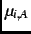
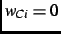
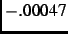
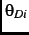
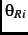
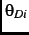
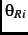
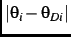
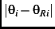

We show that NES data from the elections of 1976 through 1998 do not support the existence of such a surge and decline mechanism, although between presidential election and midterm the differences between electors' ideal points and the positions they attribute to the parties do change in a regularly repeated pattern. For most electors, turnout at midterm is only weakly related to expected policy-related losses. And the proximity between electors' ideal points and the positions electors attribute to the parties does not vary between elections in the way surge and decline theory would predict.
In the empirical coordinating model of (12a-c) and
(13), the policy-related loss expected by elector affects the
probability that does not vote () via the constructed variable
. We assess the effect that policy-related losses have on midterm
turnout by computing the effect on of setting  for each
in the midterm NES data. Setting does not necessarily make
larger, although in each year the median change in
produced by the simulation is always negative. By year, the median
differences between using the original value and
with are:
1978, ;
1982, ;
1986, ;
1990, ;
1994, ;
1998,  .footnote The median differences always have smaller magnitude for Independents than
for other electors.footnoteThe small size of these effects means that they will usually be dominated by
other factors, such as partisanship per se, that much more strongly affect the
probability of not voting.
.footnote The median differences always have smaller magnitude for Independents than
for other electors.footnoteThe small size of these effects means that they will usually be dominated by
other factors, such as partisanship per se, that much more strongly affect the
probability of not voting.
Nonetheless the possibility remains that midterm voters see themselves as farther from the president's party on policy than presidential-year voters do, while midterm nonvoters see themselves as closer to the policy of the presidential winner's party than do presidential-year nonvoters. In the absence of an explicit analysis of presidential-year turnout in the context of a coordinating model, we cannot be sure that expected policy-related loss affects the probability of casting a vote for the House election as weakly then as it does at midterm. Unfortunately, such a model is difficult to define and estimate.footnote Therefore we examine the policy proximities directly.
To do so we use the coordinating model parameter estimates of Mebane (2000) to
compute ideal points ( ) and party policy positions (

and
) for both voters and nonvoters in the NES data for each
presidential election year from 1976 through 1996. We define a voter to be
anyone who reports having voted for either the Democrat or the Republican in
the House race and a nonvoter to be anyone who does not report such a vote.
We include only those who report at least one complete set of policy position
values.footnote
) and party policy positions (

and
) for both voters and nonvoters in the NES data for each
presidential election year from 1976 through 1996. We define a voter to be
anyone who reports having voted for either the Democrat or the Republican in
the House race and a nonvoter to be anyone who does not report such a vote.
We include only those who report at least one complete set of policy position
values.footnote
Figure 1 summarizes the data that most directly bear on the pattern of changes from presidential-year to midterm that the surge and decline theory predicts. For each elector we compute the absolute difference between 's ideal point and the position of the party that won the presidential election. The absolute difference is  if the Democrat won the election and  if the Republican won. Each panel in Figure 1 displays for each year the median of the absolute differences for a different set of electors. Panel (a) shows the medians for all voters and nonvoters, and the remaining panels show the medians for each of the seven NES types of party identifiers.
Figure 1 provides little support for the idea that surge and decline explains the varying magnitudes of changes from the presidential-year to midterm reported in Table 5. Among all voters (Figure 1(a)), the median absolute difference between each voter's ideal point and the position the voter attributes to the presidential winner's party is always greater at midterm than it is during the preceding presidential election year. That does match the pattern predicted by the surge and decline theory. But in every case except one, the median absolute difference is also greater at midterm among all nonvoters. The sole exception is 1994, when the median absolute difference is slightly smaller among nonvoters than it is among nonvoters in 1992. The pattern among nonvoters does not match what surge and decline theory predicts.
The closest match to the pattern predicted by the surge and decline theory occurs among Independent Independents (Figure 1(b)), but even there the support for surge and decline is weak at best. In three of the six cases there are decreases at midterm in the median absolute difference among nonvoters. The decreases occur in 1978, 1990 and 1994. But in the remaining three midterms the median absolute difference increases from the preceding presidential year among nonvoters. Moreover, in one of the six cases (1990) the median absolute difference decreases among voters. There is hardly any support for surge and decline in the data for Independent Democrats and Independent Republicans (Figure 1(e) and 1(f)). Among nonvoters there are nine instances where the median absolute difference increases at midterm and only three instances where it decreases at midterm. Moreover, among Independent Democrats there are two instances (1990 and 1998) where the median absolute difference for voters decreases at midterm and among Independent Republicans there is one instance (1998).
Instead of the pattern that the surge and decline theory predicts, what we see is that typically both voters and nonvoters are farther from the policy of the president's party at midterm than they were at the time that the party won the presidency in the preceding election. Compared to voters, nonvoters are somewhat more likely to be on average closer to the president's party at midterm, but the difference between voters and nonvoters does not occur with a regularity sufficient to make surge and decline a compelling summary of what is going on.